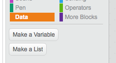

Activity Checklist
Get ready
Press Make a list to make a new list.
 Try this code
Empty the list when you start.
when flag clicked delete (all v) of [notes v]Every time something happens, add it to the list.
when this sprite clicked play note (pitch) for (0.5) beats add (pitch) to [notes v]If you want to record several things, use one list for each.
when [space v] key pressed move (10) steps add (x position) to [xs v] add (y position) to [ys v]See the “Play back a sequence” card for how to replay what you’ve recorded.